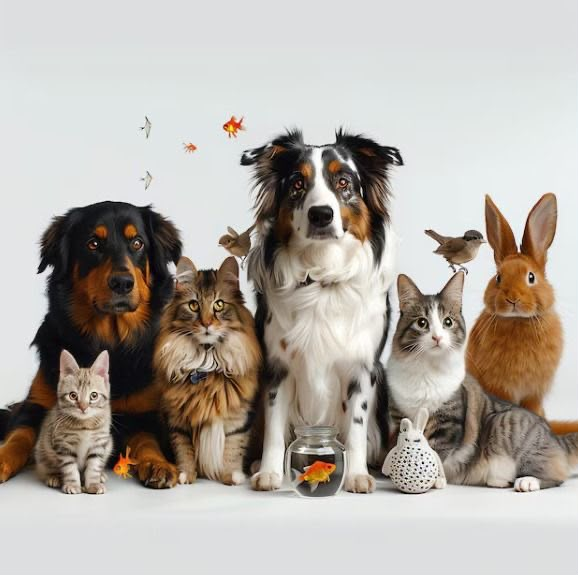

A Home for Every Wagging Tail
Pet Haven began in 2022 when a small group of volunteers noticed how many healthy pets were overlooked simply because families didn't know where to look. What started as a single foster home in Abuja has grown into a network connecting verified shelters across Nigeria with loving adopters.
Today, we've helped over 250 pets find homes — and we're just getting started.

Our Mission
To rehome healthy, well-cared-for pets with families who are ready to give them a lifetime of love, while supporting shelters with resources and adopters with lifelong guidance.
Our Vision
A future where no healthy, adoptable pet is left waiting — and every shelter has the support it needs to care for the animals in its charge.
Milestones Along the Way
2022 — The First Foster Home
Pet Haven opens its doors in Kaduna with a single foster home and five rescued dogs.
2023 — Expanding the Network
We partner with our first 10 verified shelters across Kaduna, Abuja and Lagos.
2025 — 50th Adoption
We celebrate our 50th successful adoption and launch our lifetime support hotline.
2026 — 150+ Happy Homes
Pet Haven now supports 40 shelters nationwide and continues to grow every month.
Meet the Team
A small, dedicated team of animal lovers working behind the scenes.
Muhammad Muazu
Founder & DirectorAhmad Muazu
Head VeterinarianAbubakar Muazu
Shelter RelationsMunir Mohammed
Adoption CounselorOur Values
Compassion
Every decision we make puts the wellbeing of the animal first.
Transparency
Full medical and behavioral histories, no surprises after adoption.
Community
We grow through partnerships with shelters, vets, and volunteers.